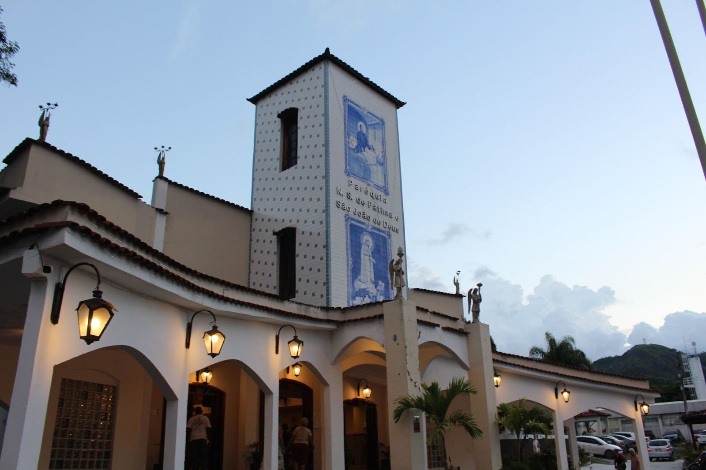
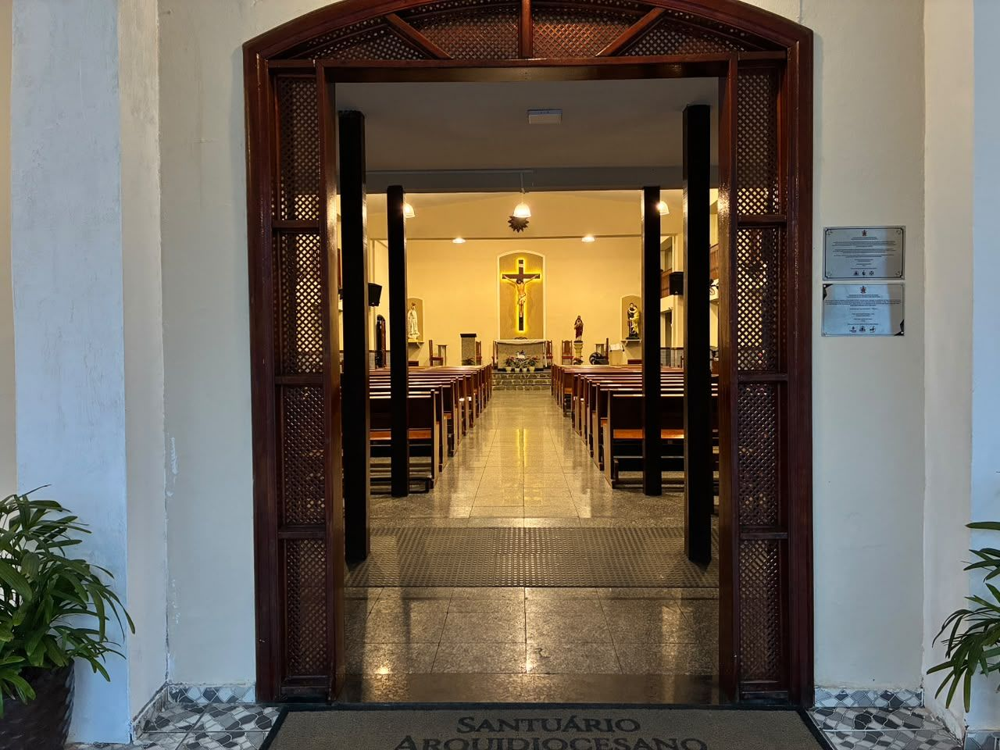

Santuário Arquidiocesano · Realengo
Nossa História
Da pequena capela em Jardim Novo ao Santuário dedicado à Oração pela Paz e ao cuidado dos Enfermos
Capítulo I · As origens
Uma comunidade que nasceu da fé de um povo
A história do atual Santuário Arquidiocesano Nossa Senhora de Fátima e São João de Deus confunde-se com a própria história do bairro Jardim Novo, em Realengo. Antes de existir como paróquia e muito antes de tornar-se santuário, existiu uma comunidade que nasceu da fé simples de um povo que decidiu construir um lugar onde Deus pudesse habitar no meio das famílias.
Nos anos 1960, Jardim Novo ainda era uma região em desenvolvimento. O bairro crescia, novas famílias chegavam e os desafios urbanos eram muitos. Havia carência de infraestrutura, dificuldades de transporte e poucos espaços comunitários. Foi nesse contexto que alguns católicos começaram a reunir-se e decidiram construir uma pequena capela dedicada a Nossa Senhora de Fátima.
Aos poucos, aquela capela tornou-se ponto de encontro espiritual e humano da comunidade. O terreno, anteriormente ocupado por eucaliptos, começou a transformar-se em espaço de oração, convivência e evangelização.
As primeiras celebrações aconteciam com o auxílio de sacerdotes vindos de outras comunidades. Entre os nomes recordados pela memória institucional está o Padre João de Deus, então pároco da Paróquia Divino Espírito Santo do Barata, reconhecido como importante incentivador da organização da comunidade e do caminho que levaria à criação paroquial.

24 de junho de 1971
A antiga capela é elevada a Paróquia Nossa Senhora de Fátima e São João de Deus
Após os encaminhamentos junto à Arquidiocese e a doação dos terrenos à Mitra Arquiepiscopal, foi lançada a pedra fundamental por Dom Jaime Câmara. Em 24 de junho de 1971, a antiga Capela de Nossa Senhora de Fátima foi oficialmente elevada à condição de Paróquia Nossa Senhora de Fátima e São João de Deus, sendo sua instalação celebrada em 8 de julho de 1971.
Década de
1960
Construção da capela de Nossa Senhora de Fátima
24 de junho
1971
Criação da Paróquia
23 de setembro
2025
Dedicação da Igreja e do Altar
19 de fevereiro
2026
Elevação a Santuário Arquidiocesano
Capítulo II · A caminhada
Décadas de fé, serviço e comunidade
-
Anos 1970
Os primeiros anos: consolidar uma comunidade
A década de 1970 foi marcada pela implantação da nova realidade paroquial e pela consolidação da identidade da comunidade. Passaram pela paróquia os primeiros sacerdotes responsáveis por estruturar a vida pastoral: Padre João de Deus, Padre João Sales, Padre Carlos Barcelar e Frei Leôn. Foi um tempo de implantação das pastorais, fortalecimento da liturgia e construção de uma comunidade mais participativa, em sintonia com as orientações do Concílio Vaticano II. Mais do que erguer paredes, tratava-se de formar um povo.
-
“Mais do que erguer paredes, tratava-se de formar um povo.”
-
Anos 1980
Expansão da comunidade
Em 1980 inicia-se o longo período de serviço de Frei José Cafasso Videira. Sua atuação marcou profundamente a história paroquial. Inspirado pela renovação pastoral da Igreja, incentivou a formação das Comunidades Eclesiais de Base, ampliou a presença comunitária e fortaleceu a participação dos leigos. Ao final da década, diversas comunidades estavam espalhadas pelo território paroquial. Esse movimento ultrapassou os limites religiosos e ajudou também no fortalecimento da vida comunitária do bairro, incentivando participação social e melhoria das condições locais.
-
Anos 1990
Crescimento e novas expressões de evangelização
Em 1994 assumiu a paróquia o Padre José de Araújo Lucena. Seu período foi marcado pelo fortalecimento das pastorais e pelo crescimento de novas iniciativas evangelizadoras. Nesse período expandiram-se a Catequese Infantil, a Pastoral da Crisma e consolidou-se o Encontro de Casais com Cristo (ECC), que trouxe novas famílias para a vida comunitária. Também se fortaleceram os Ministros Extraordinários da Comunhão Eucarística, os Vicentinos, a Pastoral da Criança e diversos serviços pastorais.
-
2002 – 2008
Novo século: renovação, reorganização e amadurecimento
Em maio de 2002 chegou à paróquia o Padre José Carlos Passos. Seu ministério foi marcado pela reorganização comunitária, renovação litúrgica, fortalecimento da Pastoral Familiar e do Dízimo, criação de novas equipes e expansão da presença pastoral. Nesse período também surgiu a Capela de Nossa Senhora do Rosário e São Benedito.
Em 2008 iniciou-se nova etapa com a chegada do Cônego Luiz Carlos Vital de Oliveira. Seu período foi marcado pela valorização da participação dos fiéis, reorganização da iniciação cristã, fortalecimento da juventude e retomada da formação pastoral. Foi iniciada a restauração do templo e consolidaram-se diversas frentes missionárias e sociais.
-
Um novo tempo
Da renovação pastoral ao nascimento do Santuário
Após o longo período de consolidação vivido sob a condução do Cônego Luiz Carlos Vital de Oliveira, a comunidade iniciou uma nova etapa de sua caminhada pastoral.
Assumiu então a paróquia o Padre Flávio, que deu continuidade ao trabalho evangelizador desenvolvido ao longo das décadas anteriores, preservando o espírito comunitário construído desde os tempos da capela e fortalecendo a missão da paróquia em meio às transformações da realidade local.
Em seguida, a comunidade foi confiada ao cuidado pastoral do Padre Renan Feres, período marcado pela continuidade da vida litúrgica, pela manutenção das atividades pastorais e pelo amadurecimento do caminho percorrido pela comunidade rumo a uma identidade cada vez mais forte como lugar de acolhida, oração e evangelização.
Posteriormente, iniciou-se uma nova fase com a chegada do Padre Ygor Gomes, atual pároco e reitor. Sob sua condução pastoral, a comunidade passou a viver um período particularmente significativo de aprofundamento espiritual, valorização da identidade litúrgica e fortalecimento da vocação do templo como lugar de oração e peregrinação.
Pastores da comunidade
Sacerdotes que conduziram a caminhada
- Padre João de Deus Anos 1970
- Padre João Sales Anos 1970
- Padre Carlos Barcelar Anos 1970
- Frei Leôn Anos 1970
- Frei José Cafasso Videira A partir de 1980
- Padre José de Araújo Lucena A partir de 1994
- Padre José Carlos Passos A partir de 2002
- Cônego Luiz Carlos Vital de Oliveira A partir de 2008
- Padre Flávio
- Padre Renan Feres
- Padre Ygor Gomes Atual pároco e reitor
Capítulo III · 23 de setembro de 2025
Dedicação da Igreja e do Altar
Entre os acontecimentos mais marcantes dessa etapa está a celebração da Dedicação da Igreja e do Altar, realizada em 23 de setembro de 2025 e presidida pelo Cardeal Orani João Tempesta. A dedicação de uma igreja ocupa lugar especial na tradição católica. Mais do que uma celebração comemorativa, trata-se do ato litúrgico pelo qual um templo é reservado de modo permanente ao culto divino e o altar é solenemente consagrado como centro da vida sacramental da comunidade.
Naquele dia, o povo reunido não apenas celebrou um rito, mas reconheceu, diante de Deus, toda uma história construída por gerações: a fé dos primeiros moradores que ergueram a capela, o trabalho dos sacerdotes que conduziram a comunidade e a dedicação silenciosa de tantos leigos que ajudaram a transformar aquele espaço em verdadeira casa de oração. Esse momento tornou-se também sinal de preparação para um novo passo na história da comunidade.
Capítulo IV · 19 de fevereiro de 2026
Santuário Arquidiocesano
Santuário da Saúde e da Paz
Poucos meses depois, em 19 de fevereiro de 2026, em celebração presidida pelo Cardeal Orani João Tempesta, a então Paróquia Nossa Senhora de Fátima e São João de Deus foi oficialmente elevada à condição de Santuário Arquidiocesano. Ao receber esse título, o templo recebeu também uma missão própria dentro da Arquidiocese: tornar-se lugar especialmente dedicado à oração pela paz e ao cuidado dos enfermos.
A elevação a Santuário não representou ruptura com a história paroquial, mas o reconhecimento oficial de uma vocação que já vinha sendo vivida ao longo dos anos: ser casa aberta aos peregrinos, espaço de escuta, refúgio espiritual para os que sofrem e sinal concreto da presença misericordiosa de Deus.
-
Oração pela paz
Lugar especialmente dedicado à oração pela paz.
-
Cuidado dos enfermos
Refúgio espiritual para os que sofrem.
-
Casa dos peregrinos
Casa aberta aos peregrinos e espaço de escuta.
Assim, aquilo que começou como uma pequena capela erguida pela fé de um povo em Jardim Novo tornou-se, ao longo das décadas, um Santuário Arquidiocesano — lugar onde permanece viva a missão de acolher, evangelizar, rezar pela paz e cuidar daqueles que procuram consolo e esperança.
Memória
Um pouco da história em fotos
Mais do que paredes e pedras, este lugar guarda histórias de fé, oração e encontro com Deus.
Da simplicidade da antiga capela erguida pelos primeiros moradores de Jardim Novo ao reconhecimento como Santuário Arquidiocesano, cada etapa desta caminhada foi construída pela dedicação de sacerdotes, famílias e peregrinos que fizeram deste espaço uma verdadeira casa de acolhida.
Hoje, o Santuário Nossa Senhora de Fátima e São João de Deus permanece como sinal de esperança — lugar de oração pela paz, cuidado dos enfermos e renovação da fé.
Venha peregrinar
Nossa localização
No coração de Jardim Novo, em Realengo, este lugar nasceu da fé de uma comunidade e tornou-se casa de oração, acolhida e esperança para todos que chegam.
Venha peregrinar, rezar pela paz, apresentar suas intenções e encontrar, sob o olhar materno de Nossa Senhora de Fátima e a proteção de São João de Deus, um espaço de encontro com Deus e renovação da vida.
- Endereço
- Estrada Manuel Nogueira de Sá, 1421
Realengo — Rio de Janeiro / RJ - Telefone
- (21) 96432-2134